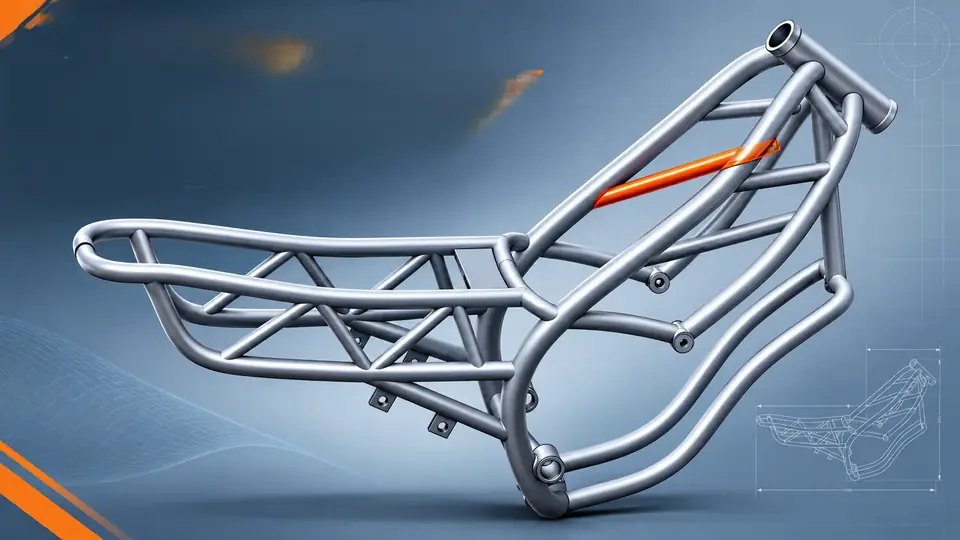
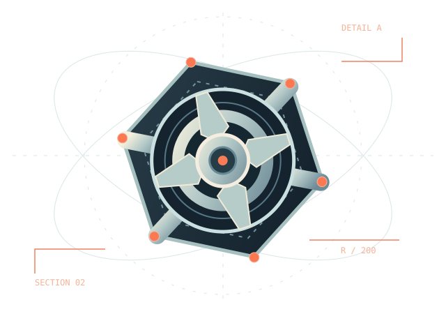
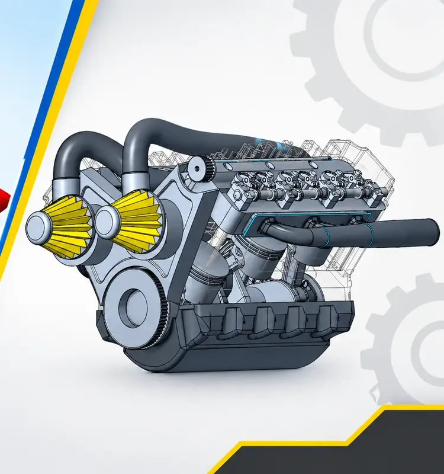
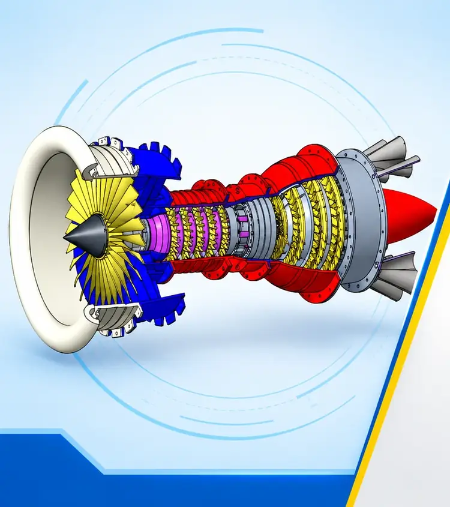
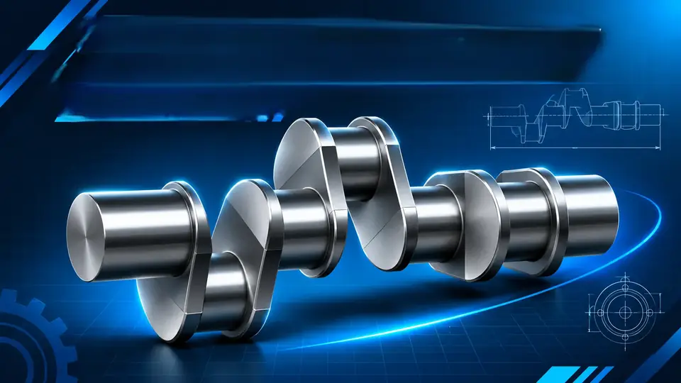

SIMULATION / MATERIAL STUDY
01Motorcycle Chassis — Structural & Modal Analysis
Exploring chassis response and comparing AISI 1020 and AISI 4140 steel through finite element analysis.
MECHANICAL ENGINEERING CAD · FEA · MANUFACTURING
I'm a B.Tech Mechanical Engineering student at CVR College of Engineering, Hyderabad, expecting to graduate in 2027. I turn engineering questions into models, simulations and practical studies.

I'm currently pursuing my B.Tech in Mechanical Engineering at CVR College of Engineering, Hyderabad, with expected graduation in 2027. My interests span mechanical design, CAE simulation and manufacturing engineering.
Whether I'm modelling an engine, analysing a chassis or studying machining, I aim to understand the engineering decisions behind the result—not simply produce a final model.
Each project is an opportunity to turn a mechanical question into a model, a study or a better engineering decision.
04 SELECTED PROJECTS
Exploring chassis response and comparing AISI 1020 and AISI 4140 steel through finite element analysis.

Investigating engine geometry and component arrangement through three-dimensional modelling.

A jet engine CAD study focused on form, component relationships and assembly representation.

Investigating crankshaft behaviour through structural results and the latest technical documentation.
Project thumbnails feature the supplied CAD artwork. Original project images, reports and CAD files remain available through the corresponding project pages.
Tools I use and engineering subjects I'm continuing to develop through coursework and projects.
Three-dimensional modelling, component geometry, assemblies and engineering drawings.
Stress, deformation and natural-frequency studies, with attention to modelling assumptions.
Machining processes, cutting-fluid studies, tolerances and manufacturing fundamentals.
B.Tech Mechanical Engineering · Class of 2027
Resume PDF will be available here once uploaded.
Open to mechanical engineering internships, graduate engineer trainee opportunities, and technical collaborations. Reach me directly using the details below.